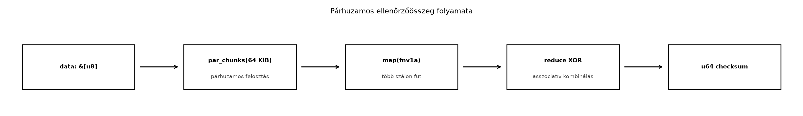

A párhuzamos programozás klasszikus C++-os útja az
std::thread, az std::async vagy a C++17
std::execution policy. Mindegyiknél a programozó dönti el,
hogyan osztja fel a munkát, hogyan csatlakozik a szálakhoz, és ami a
legfontosabb: ő felel azért, hogy ne legyen data race. A Rust rayon
könyvtár ezt a terhet jelentősen csökkenti: egy meglévő iterátorláncot
gyakran egyetlen szó – par_iter – átírásával
párhuzamosíthatunk, miközben a típusrendszer továbbra is garantálja a
memóriabiztonságot.
Tegyük fel, hogy az rkv snapshot-fájlja több tíz megabájtos, és
minden mentésnél ellenőrzőösszeget akarunk számolni. A C++17
std::transform_reduce std::execution::par
policyvel elvileg párhuzamosan végzi a map-reduce lépést, de a szabvány
nem garantálja, hogy ténylegesen párhuzamos lesz: a policy csak
engedély, nem parancs. A Rustban a rayon ellenben garantáltan
munkaellopásos ütemezőt használ, és a párhuzamos iterátorok a megszokott
Iterator API-ra hasonlítanak, így a kód olvasható
marad.
Az rkv esetében a korábbi Iterátorok: lusta
adapterek és saját iterátor alfejezetben megírtuk a
Keys<'a> iterátort, és láttuk, hogyan fűzhetők
adapterek a lusta láncba. A rayon ugyanezt a szemléletet terjeszti ki
több szálra, de a párhuzamos iterátoroknak szigorúbb követelményei
vannak, mert az elemek feldolgozása más-más szálon történhet.
Definíció. A rayon párhuzamos iterátor
(parallel iterator) a szekvenciális Iterator-hoz hasonló
absztrakció, amely a gyűjtemény elemeit több szálon, felosztva dolgozza
fel. A három fő belépési pont:
par_iter() – párhuzamosan iterál kölcsönzött elemeken
(&T),par_iter_mut() – párhuzamosan iterál változtatható
kölcsönzéseken (&mut T),into_par_iter() – párhuzamosan fogyasztja el a
gyűjteményt, tulajdonba véve az elemeket.Szabály. A párhuzamos iterátorok minden
closure-jének, amelyet map, filter, for_each vagy hasonló adapter kap,
Send és Sync követelménynek kell megfelelnie.
Ennek oka, hogy a rayon a munkát más szálakra költöztetheti, és a
closure-ök által befogott értékeknek is át kell tudniuk lépni a
szálhatárokat. A rayon ezt a ParallelIterator trait
boundjaiban rögzíti: a closure Fn + Send +
Sync kell, hogy legyen. Ez a C++-ban nem létezik: ott a
programozónak kell ellenőriznie, hogy a lambda által használt adatok
biztonságosak-e.
Definíció. A munkaellopás (work stealing) olyan párhuzamos ütemezési stratégia, amelyben minden szál rendelkezik egy saját feladatsorral; ha egy szál kifogy a munkából, más szálak sorából „lop” feladatokat. Ez kiegyensúlyozott terhelést ad akkor is, ha a feladatok mérete egyenetlen. A rayon alapértelmezett ütemezője munkaellopást használ.
Szabály. A párhuzamos feldolgozás sorrendje nem
garantálható. A
par_iter().map(...).collect::<Vec<_>>()
megtartja az eredeti sorrendet, mert a collect gondoskodik
a helyes pozícióba helyezésről, de a for_each, a
reduce és a fold kombinálási sorrendje a
végrehajtás ütemezésétől függ. Ezért a kombináló műveletnek
asszociatívnak (és általában kommutatívnak) kell lennie a helyes
eredményhez.
Amdahl-törvény. Ha a program hányada párhuzamosítható, a fennmaradó hányad pedig soros, akkor szál esetén az elérhető maximális gyorsulás:
Például ha a kód 90%-a párhuzamosítható (), akkor végtelen sok szálon is legfeljebb -szeres gyorsulás érhető el; ha csak 50% párhuzamosítható, a maximum 2-szeres. A valóságban a párhuzamosításnak fix overheadje is van (szinkronizáció, feladatütemezés, cache-koherencia), így kis munkák esetén a párhuzamos változat lassabb lehet a szekvenciálisnál.
A C++17 std::transform_reduce párhuzamos policyvel
map-reduce szerűen összegezhetünk:
#include <execution>
#include <numeric>
#include <vector>
long long sum_of_squares(const std::vector<int>& v) {
return std::transform_reduce(
std::execution::par,
v.begin(), v.end(),
0LL,
std::plus<>{},
[](int x) { return static_cast<long long>(x) * x; }
);
}Rustban ugyanez a rayonnal:
use rayon::prelude::*;
fn sum_of_squares(v: &[i32]) -> i64 {
v.par_iter()
.map(|&x| i64::from(x) * i64::from(x))
.sum()
}A két kód felületesen hasonló, de a különbség lényeges. A C++-ban a
std::execution::par nem garantál tényleges párhuzamosságot,
és a lambda által befogott állapotra semmilyen típusbiztonsági
ellenőrzés nincs; a data race-t elkerülő fegyelem a programozóé. A
Rustban a par_iter closure-je csak akkor fordul, ha a
befogott értékek Send és Sync, így a fordító
kizárja a megosztott állapotból eredő adatversenyeket. Ráadásul a rayon
munkaellopásos ütemezője garantáltan párhuzamosít, ha a munka mérete
indokolja.
Munkakönyvtár: ~/rust-labor/rkv/
A labor célja, hogy az rkv snapshot-fájljaiból párhuzamosan
számoljunk ellenőrzőösszeget. A snapshot byte-sorozat, amelyet nagy
méret esetén érdemes több szálon feldolgozni. Az rkv-core crate-hez
hozzáadjuk a rayon függőséget, létrehozunk egy checksum
modult, és példaprogrammal összehasonlítjuk a szekvenciális és a
párhuzamos változatot.
A rkv-core/Cargo.toml [dependencies]
szakaszába kerüljön:
rayon = "1"checksum
modulHozzuk létre az rkv-core/src/checksum.rs fájlt:
use rayon::prelude::*;
const CHUNK_SIZE: usize = 64 * 1024;
fn fnv1a(chunk: &[u8]) -> u64 {
let mut hash = 0xcbf2_9ce4_8422_2325u64;
for &b in chunk {
hash ^= u64::from(b);
hash = hash.wrapping_mul(0x100_0000_01b3);
}
hash
}
/// Párhuzamosan számít egy ellenőrzőösszeget a bájtfolyamra.
///
/// A bemenetet 64 KiB-os darabokra osztja, minden darabra FNV-1a hash-t
/// számít, majd a darabok hash-ét XOR-ral kombinálja. Az XOR asszociatív
/// és kommutatív, ezért a párhuzamos reduce sorrendje nem befolyásolja az
/// eredményt.
pub fn parallel_checksum(data: &[u8]) -> u64 {
data.par_chunks(CHUNK_SIZE)
.map(fnv1a)
.reduce(|| 0, |a, b| a ^ b)
}
/// A párhuzamos változat szekvenciális megfelelője ugyanazzal a logikával.
pub fn sequential_checksum(data: &[u8]) -> u64 {
data.chunks(CHUNK_SIZE)
.map(fnv1a)
.fold(0, |a, b| a ^ b)
}
#[cfg(test)]
mod tests {
use super::*;
#[test]
fn empty_input_has_zero_checksum() {
assert_eq!(parallel_checksum(b""), 0);
assert_eq!(sequential_checksum(b""), 0);
}
#[test]
fn both_impls_produce_same_result() {
let data = b"hello rkv";
assert_eq!(parallel_checksum(data), sequential_checksum(data));
}
}A par_chunks a ParallelSlice trait
metódusa, amely párhuzamosan iterál a szelet darabjain. A
map minden darabra kiszámítja az FNV-1a hash-t, a
reduce pedig XOR-ral kombinálja a részeredményeket. A
kezdőérték 0, mert 0 ^ x = x.
Az rkv-core/src/lib.rs fájlban a meglévő modulok mellé
vegyük fel:
pub mod checksum;Hozzuk létre az rkv-core/examples/checksum_bench.rs
fájlt:
use std::time::Instant;
use rkv_core::checksum::{parallel_checksum, sequential_checksum};
fn main() {
let data = vec![0xABu8; 64 * 1024 * 1024]; // 64 MiB
let start = Instant::now();
let seq = sequential_checksum(&data);
let seq_time = start.elapsed();
let start = Instant::now();
let par = parallel_checksum(&data);
let par_time = start.elapsed();
println!("szekvenciális: {:?}, checksum = {seq}", seq_time);
println!("párhuzamos: {:?}, checksum = {par}", par_time);
assert_eq!(seq, par);
}A példa 64 MiB adatot generál, és mindkét függvényt lefuttatja. A várt kimenet gépfüggő; nagyobb gépen a párhuzamos változat általában gyorsabb, de a különbség nem garantált, és kis adaton a párhuzamos változat a thread pool felépítése miatt lassabb lehet.
Futtassuk a teszteket, majd a példaprogramot:
cargo test -p rkv-core
cargo run --release -p rkv-core --example checksum_benchA példaprogram csak illusztráció; a mért időt mérési jegyzőkönyvben
érdemes rögzíteni, de következtetést csak megismételhető benchmarkból
szabad levonni. A r049 alfejezetben a Criterion
benchmark-crate-tel fogjuk ezt a függvényt mérni.

A párhuzamos iterátorlánc elemei ugyanazok, mint a szekvenciális
Iterator-nál: egy adatforrás, egy leképezés és egy
fogyasztó. A különbség az, hogy a par_chunks által
előállított darabokat a rayon ütemezője szétosztja a worker szálak
között, és a reduce kombináló lépései csak akkor futnak,
amikor az egyes részeredmények elkészültek.
Továbbvitt eredmény. Az itt létrehozott
checksum modul parallel_checksum és
sequential_checksum függvényeit a Teljesítmény: mérés, profilozás, allokáció,
release-beállítások alfejezet fogja benchmarkolni Criterionnal, és
ott döntjük el, hogy a snapshot-mentésben melyik változatot érdemes
használni.
1. A párhuzamosítás minden áron. A rayon párhuzamos
iterátorai szálakat és feladatokat hoznak létre, ami fix overheaddel
jár. Egy néhány elemből álló tömbön a par_iter gyakran
lassabb, mint a szekvenciális iter. A párhuzamosítást csak
akkor érdemes bevezetni, ha az elemenkénti munka elég nagy, vagy ha az
elemszám elég nagy ahhoz, hogy a munkaellopásos ütemező nyeresége
meghaladja az overheadet. A laborban ezért használtunk 64 MiB
tesztadatot.
2. Rc<RefCell<T>> párhuzamos
closure-ben. A Rc nem Send és nem
Sync, mert a referenciaszámláló nem atomi. Ha egy
par_iter closure megpróbálja befogni, a fordító hibát
ad:
Ez a változat szándékosan nem fordul le:
use rayon::prelude::*;
use std::cell::RefCell;
use std::rc::Rc;
fn main() {
let shared = Rc::new(RefCell::new(0));
let data = vec![1, 2, 3];
data.par_iter().for_each(|x| {
*shared.borrow_mut() += x; // Rc nem Send
});
}A hibaüzenet lényege: Rc<RefCell<i32>>
cannot be sent between threads safely, mert a Rc nem
implementálja a Send traitet. A javítás az, ha valóban
megosztott, szálbiztos mutációra van szükség, akkor
Arc<Mutex<T>> vagy
Arc<AtomicI32> használunk. A rayonnal azonban gyakran
jobb megoldás a reduce vagy a map +
collect, amely nem igényel megosztott állapotot.
3. Nem asszociatív kombináló művelet. Ha a
reduce kombináló művelete nem asszociatív (például kivonás
vagy egy nem kommutatív hash-kombináció), a párhuzamos eredmény eltérhet
a szekvenciálistól. A laborban ezért választottuk az XOR-t, amely
asszociatív és kommutatív. Ha asszociatív, de nem kommutatív műveletre
van szükség (például string-összefűzés), akkor a fold +
reduce kombinációt kell használni a determinisztikus
végeredményhez, de a részeredmények sorrendje még így is befolyásolhatja
a kombinálást; ilyenkor explicit collect-tel gyűjtsük a
részeredményeket és utána kombináljuk sorrendben.
4. A par_iter_mut nem enged átfedő
írást. A par_iter_mut párhuzamosan ad
&mut referenciákat az elemekre, de a párhuzamos
iterátor belsőleg felosztja a szeletet, így egyszerre soha nem ad két
&mut referenciát ugyanarra az elemre. Ez azonban azt is
jelenti, hogy a closure-ön belül nem férhetünk hozzá a gyűjtemény
egészéhez; ha például egy Vec-be akarunk közben pusholni,
az adatversenyhez vezetne, és a fordító megakadályozza. A megoldás a
collect vagy a
rayon::prelude::ParallelIterator::collect használata.
Lefordul-e a következő kód? Ha nem, miért, és mi a javítás?
use rayon::prelude::*;
use std::rc::Rc;
fn main() {
let owner = Rc::new(vec![1, 2, 3]);
let sum: i32 = owner.par_iter().sum();
println!("{sum}");
}Az alábbi C++ kód párhuzamosan számolja ki egy
std::vector<double> elemeinek átlagát (a
std::execution::par feltételezett valós párhuzamossággal).
Írd át Rustra a rayon használatával, és magyarázd el, hogy a Rust
változat miért biztonságosabb.
#include <execution>
#include <numeric>
#include <vector>
double average(const std::vector<double>& v) {
double sum = std::reduce(std::execution::par, v.begin(), v.end(), 0.0);
return sum / v.size();
}Egészítsd ki az rkv-core/src/checksum.rs-t egy
parallel_max függvénnyel, amely párhuzamosan megkeresi egy
&[u32] maximális elemét. Használd a
par_iter max metódusát, és írj tesztet, amely
összehasonlítja a szekvenciális iter().max() eredményével.
A függvény szignatúrája:
pub fn parallel_max(data: &[u32]) -> Option<u32>;A snapshot-mentés jelenleg szekvenciálisan írja a fájlt. Tervezd meg,
hogyan lehetne a parallel_checksum függvényt integrálni a
mentési folyamatba anélkül, hogy a fájlírás párhuzamossá válna. Írd le a
tervezett hívási helyet pszeudokódban vagy Rust-vázlatban, és indokold,
miért érdemes a checksumot a fájl bezárása előtt vagy után
számítani.
A kód nem fordul le, mert a Rc<Vec<i32>> nem
Send és nem Sync, így a par_iter
nem tudja a referenciát más szálakra átadni. A hiba lényege:
Rc<Vec<i32>> cannot be shared between threads
safely. Javítás: használjunk Arc-ot, vagy ami
idiomatikusabb, adjuk át a szeletet (&[i32]) vagy a
Vec-et tulajdonba:
use rayon::prelude::*;
fn main() {
let owner = vec![1, 2, 3];
let sum: i32 = owner.par_iter().sum();
println!("{sum}");
}use rayon::prelude::*;
fn average(v: &[f64]) -> f64 {
let sum: f64 = v.par_iter().sum();
sum / v.len() as f64
}A Rust változat nem engedi, hogy a par_iter closure-je
megosztott állapotot módosítson; a sum egy fogyasztó, amely
belsőleg kezeli a részösszegek kombinálását. A C++
std::reduce párhuzamos policyje esetén a programozónak kell
biztosítania, hogy a std::plus asszociatív legyen, és hogy
a vektor elemeihez ne férjen hozzá másik szál közben. A Rust
típusrendszer ezt a Send és Sync boundokkal
kényszeríti ki.
use rayon::prelude::*;
pub fn parallel_max(data: &[u32]) -> Option<u32> {
data.par_iter().copied().max()
}
#[cfg(test)]
mod tests {
use super::*;
#[test]
fn max_matches_sequential() {
let data = vec![3, 7, 1, 9, 2, 8, 5];
assert_eq!(parallel_max(&data), data.iter().copied().max());
}
#[test]
fn empty_input_yields_none() {
assert_eq!(parallel_max(&[]), None);
}
}A par_iter() &u32 elemeket ad, ezért a
copied() adapterrel u32 értékeket készítünk,
amit a max fogyasztó összehasonlít.
A mentési folyamat vázlata:
fn save_snapshot(path: &Path, data: &[u8]) -> Result<u64, io::Error> {
// 1. Ideiglenes fájlba írjuk az adatokat.
let tmp = tempfile_name(path);
std::fs::write(&tmp, data)?;
// 2. A checksum számítása a pufferből, nem a fájlból.
let checksum = checksum::parallel_checksum(data);
// 3. Atomikusan átnevezzük a végleges névre.
std::fs::rename(&tmp, path)?;
// 4. Visszaadjuk az ellenőrzőösszeget naplózáshoz.
Ok(checksum)
}A checksumot a fájl írása előtt a memóriabeli pufferből számoljuk,
mert így nem kell a fájlt újra beolvasni, és a párhuzamos feldolgozás a
data szeletet használhatja. Ha a fájl bezárása után
számítanánk, újabb I/O-t igényelne, és a párhuzamosítás a háttértár
sebességétől függne. A függvény a Result-ot ad vissza, így
a hibakezelés a hívónál marad.
A rayon párhuzamos iterátorokkal (par_iter,
par_iter_mut, into_par_iter) egy meglévő
iterátorlánc egy sor módosításával párhuzamosítható, feltéve, hogy a
closure-ök Send és Sync, és a kombináló
művelet asszociatív. A munkaellopásos ütemező kiegyensúlyozza a
terhelést, a reduce és fold pedig
determinisztikus eredményt ad, ha a művelet kommutatív. A laborban az
rkv-core/src/checksum.rs modulban létrehoztuk a
parallel_checksum és sequential_checksum
függvényeket, amelyek 64 KiB-os darabokra bontva FNV-1a hash-t
számolnak, majd XOR-ral kombinálnak. A párhuzamos változatot a Teljesítmény: mérés, profilozás, allokáció,
release-beállítások alfejezetben fogjuk benchmarkolni. A
párhuzamosítás csak kellően nagy munkánál kifizetődő; az Amdahl-törvény
és az overhead határt szab a gyorsulásnak.
A nyelvi szabályok a stabil Rust Reference és a The Rust
Programming Language dokumentációján alapulnak. A rayon könyvtár
pontos API-ját és a ParallelSlice::par_chunks,
ParallelIterator::reduce és
ParallelIterator::max metódusok viselkedését a docs.rs-en
ellenőrizni kell. A C++17 std::execution policy tényleges
párhuzamossága implementációfüggő; ebben az összevetésben csak az
API-szintű különbséget mutattuk be. A laborban használt rayon verzió
főverziója 1, de a pontos kisebb verziót a
Cargo.lock rögzíti. A mért gyorsulási adatok gépfüggők,
ezért a példában nem adtunk meg konkrét számokat.